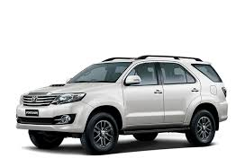
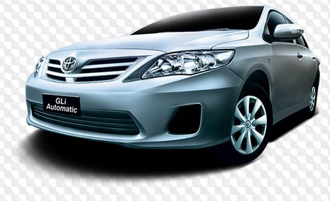
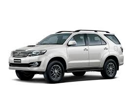
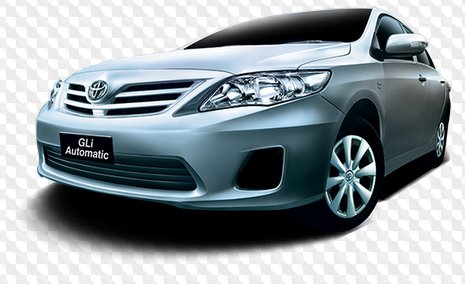

The company took its present name in 1982, when Toyota Motor Company was merged with Toyota Motor Sales Company, Ltd. Two years later Toyota partnered with General Motors Corporation in the creation of New United Motor Manufacturing, Inc., a dual-brand manufacturing plant in California, where Toyota began U.S. production in 1986. The company experienced significant growth well into the 21st century, with innovations such as its luxury brand, Lexus (1989), and the first mass-produced hybrid-powered vehicle in the world, the Prius (1997). In 1999 Toyota was listed on both the London Stock Exchange and the New York Stock Exchange. The company continued to expand to new markets—specifically targeting younger buyers with the launch of its Scion brand (2003) and unveiling the world’s first luxury hybrid vehicle, the Lexus RX 400h (2005). However, the company subsequently faced significant financial challenges: plummeting sales stemming from the global financial crisis of 2008 as well as an international safety recall of more than eight million vehicles in 2010, which temporarily halted the production and sales of several of its top models. Beginning in 2014, millions of vehicles manufactured by Toyota and several other car companies were recalled by regulators in the United States because of potentially malfunctioning airbags produced by the Japanese automotive-parts supplier Takata. The recall was “the largest and most complex safety recall in U.S. history,” according to the National Highway Traffic Safety Administration. Today Toyota has assembly plants and distributors in many countries. In addition to automotive products, its subsidiaries manufacture rubber and cork materials, steel, synthetic resins, automatic looms, and cotton and woolen goods. Others deal in real estate, prefabricated housing units, and the import and export of raw materials.
Toyota, is the largest automaker in the world. Toyota in Indonesia was established since 1971. For more than 40 years, Toyota Indonesia has commited to grow together with People, Society, and Environment through manufacturing of Global Quality Product by exercising Fexibility with Integrity.


 



| Image | Model | Price |
|---|---|---|
|
Toyota Yaris | IDR 399.000.000,00 |
|
Toyota Sienta | IDR 350.000.000,00 |
|
Toyota Vios | IDR 425.000.000,00 |